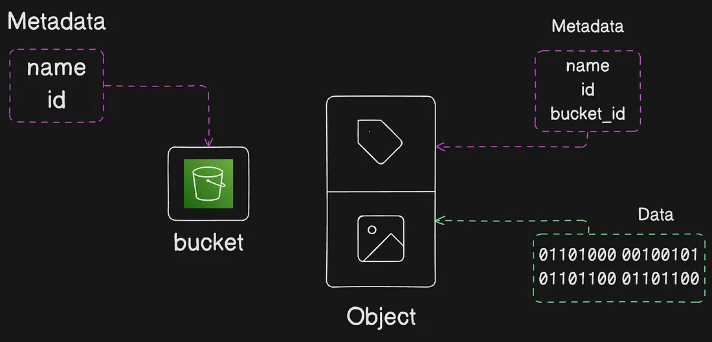
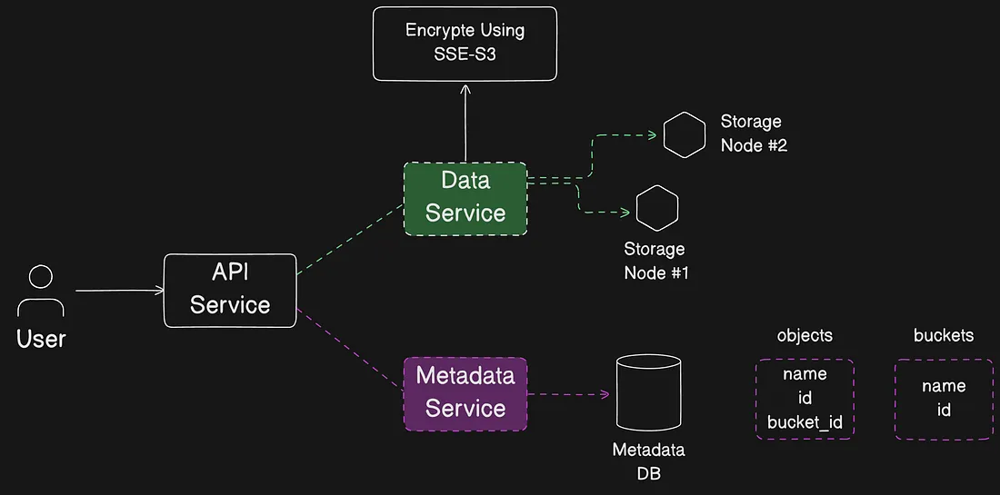
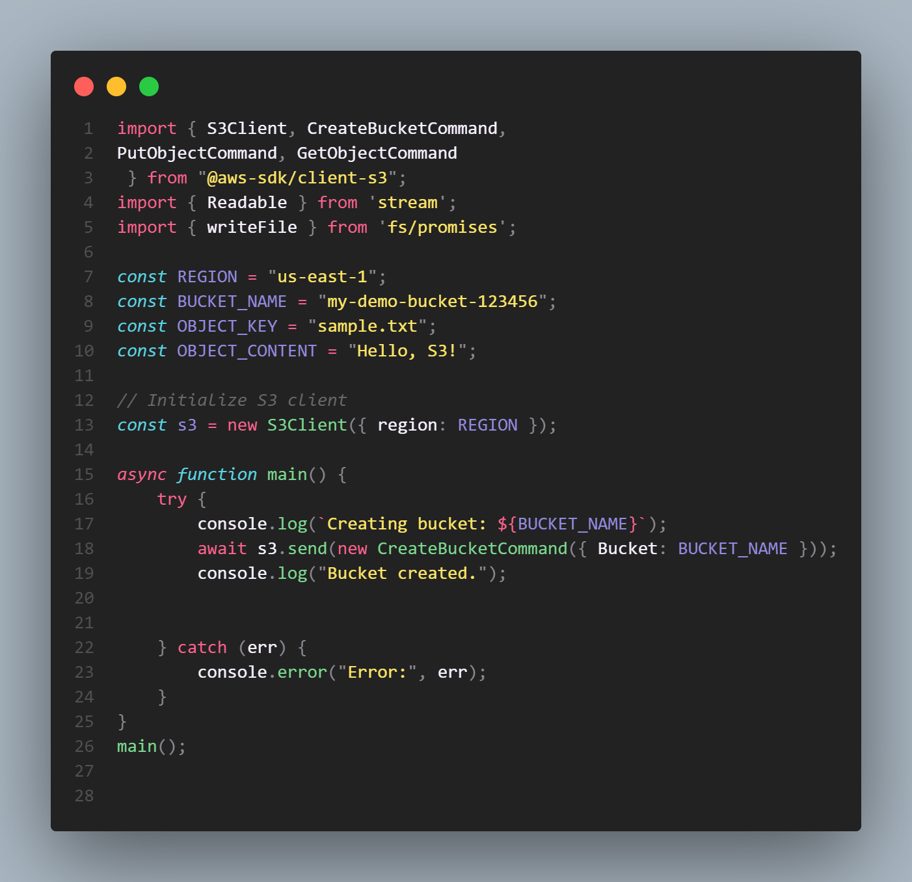
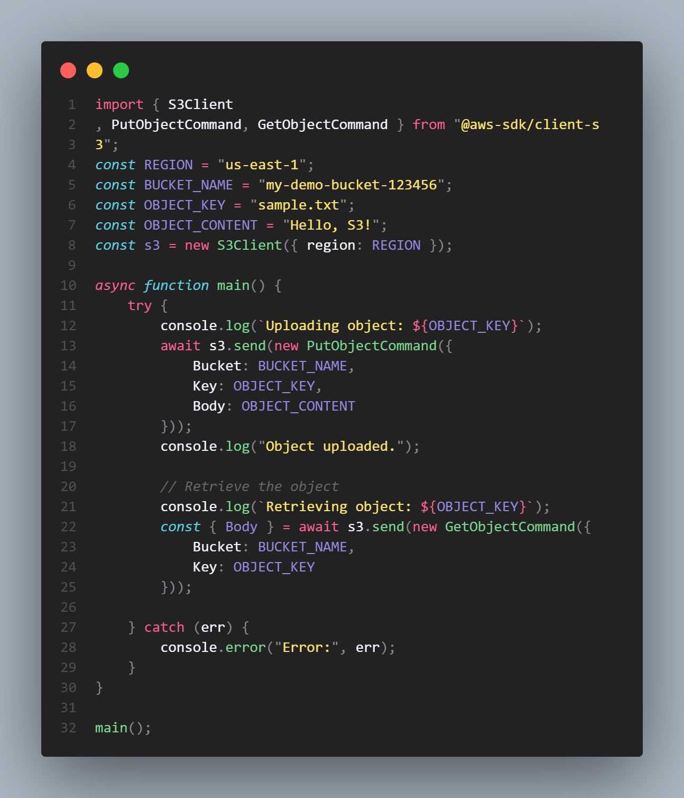

Amazon S3: Simple Storage Service
Amazon Simple Storage Service (Amazon S3) is an object storage service offered by Amazon Web Services (AWS) that provides scalable, secure, and highly available cloud storage for a wide range of data types, such as files, backups, logs, media, and more.
Amazon S3 is an object storage service that stores data as objects within buckets. An object is a file and any metadata that describes the file. A bucket is a container for objects.
Steps to Set Up S3 in AWS
- Create an S3 Bucket: Define a unique bucket name and select the AWS region where the bucket will be created.
- Set Bucket Permissions: Configure permissions to control access to the bucket, using AWS Identity and Access Management (IAM) policies, bucket policies, or Access Control Lists (ACLs).
- Upload Objects: Add files or data (called objects) to the bucket, specifying optional metadata, storage class, and encryption settings.
- Enable Features: Configure features like versioning, lifecycle policies, cross-region replication, and event notifications to manage the data efficiently.
- Access and Manage: Access objects via the S3 console, AWS CLI, SDKs, or APIs, using secure URLs or presigned URLs for controlled sharing.
How AWS Manages Storage
AWS S3 leverages a globally distributed infrastructure with redundancy across multiple Availability Zones (AZs) to ensure high durability and availability.
Key Features:
- Durability: Designed for 99.999999999% (11 nines) durability by storing multiple copies of data across facilities.
- Scalability: Scales automatically to handle unlimited data and concurrent access requests.
- Security: Provides encryption at rest and in transit, fine-grained access control, and audit logging with AWS CloudTrail.
- Cost-Effectiveness: Offers multiple storage classes to optimize cost based on access patterns, such as S3 Standard, S3 Glacier, and S3 Intelligent-Tiering.
S3’s architecture ensures that data remains available, durable, and secure, making it ideal for backup, archival, data lakes, and modern application data.
Amazon S3 Buckets and Objects

Bucket
A bucket in Amazon S3 is a top-level container that holds your data. Think of it as a logical container for storing objects, similar to a folder or a drive. Each bucket has a globally unique name and is tied to a specific AWS region.
Object
An object in Amazon S3 is the fundamental storage unit. It consists of two main parts:
- Data: The actual content you want to store, such as a file, image, video, or document.
- Metadata: Key-value pairs that describe the object, such as its content type, creation date, custom tags, and permissions.
Each object is uniquely identified within a bucket by a combination of the bucket name and the object key (the unique name you assign to the object).
How S3 Stores and Retrieves Data

This diagram shows how Amazon S3 handles data storage and retrieval behind the scenes. When a user interacts with S3 (such as uploading or retrieving an object), the request first goes through the API Service, which coordinates the workflow. The API Service passes the data to two key backend components: the Data Service, which handles the actual object data, encrypting it (for example, using SSE-S3) and distributing it across multiple storage nodes (like Storage Node #1 and #2) for durability and availability; and the Metadata Service, which manages all the object’s metadata (such as object name, ID, bucket ID) and writes it into the Metadata Database. This separation ensures that S3 can quickly look up objects by their metadata and locate the exact storage location. The combination of data encryption, distributed storage, and a centralized metadata index enables S3 to deliver secure, fast, and scalable object storage — making sure objects are easily retrievable using just the bucket name and object key.
Consistent Hashing-Based Lookup
Curious how AWS-like distributed systems manage resource lookups efficiently?
Dive into how Consistent Hashing helps in minimizing re-distribution and balancing
when nodes or data buckets change dynamically.
View Consistent Hashing Approach
A Node.js code snippet for creation of a S3 bucket

How to Store and Retrieve Data from a S3 bucket

AWS Use Cases for S3
Backup and Restore
Securely store backups and quickly restore critical data in case of disaster recovery or data loss events.
Data Archiving
Use cost-effective storage classes like S3 Glacier for long-term retention and regulatory compliance.
Big Data Analytics
Build data lakes on S3 to store massive amounts of structured and unstructured data for analysis with AWS analytics services.
Static Website Hosting
Host static websites directly from S3 buckets, leveraging scalable and globally distributed infrastructure.